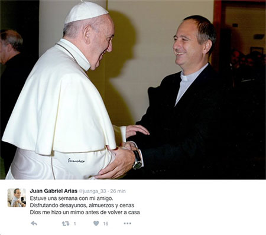
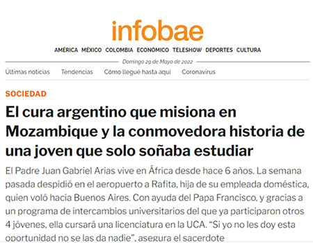

Es argentino. Nació el 27 de febrero de 1968. Es Sacerdote de la Arquidiócesis de Buenos Aires. Sus primeros 6 años de cura estuvo en la Parroquia Inmaculada Concepción de Belgrano en Buenos Aires.
En el año 2000 tuvo su primera experiencia pastoral en Mozambique, en la Diócesis de Xai-Xai. Al volver fue párroco de Natividad de María, ubicada en el barrio de Barracas, durante 9 años. Fue miembro de la Comisión Directiva de Racing por 4 años y medio. Realizó muchos viajes misiones a Mozambique, pero fue a partir del 2015 que se radicó definitivamente en el país africano.

El cura argentino que misiona en Mozambique y la conmovedora historia de una joven que solo soñaba estudiar
El Padre Juan Gabriel Arias vive en África desde hace 6 años. La semana pasada despidió en el aeropuerto a Rafita, hija de su empleada doméstica, quien voló hacia Buenos Aires. Con ayuda del Papa Francisco, y gracias a un programa de intercambios universitarios del que ya participaron otros 4 jóvenes, ella cursará una licenciatura en la UCA. “Si yo no les doy esta oportunidad no se las da nadie”, asegura el sacerdote
Los 9486 kilómetros que separan Argentina de Mozambique no son un impedimento para recibir noticias del Padre Juan Gabriel Arias (51). También conocido como “el cura hincha de Racing” (lleva tatuada en su brazo derecho una imagen de Jesús junto al escudo de la Academia), el sacerdote llegó al país africano en el año 2000 como parte de una misión católica.